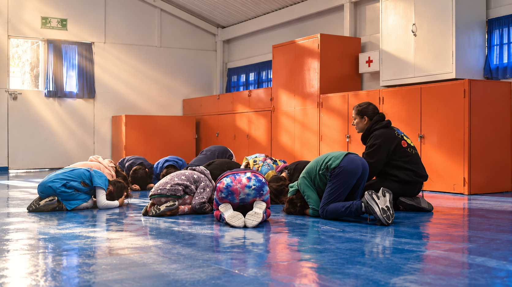

Aquí vivirá una página real del libro de un grupo.
No usamos un texto inventado ni caligrafía falsa para llenar el espacio. La siguiente versión deberá incorporar una pieza autorizada, su transcripción y el contexto en que fue escrita.

Preescolar y primaria · Tlalpan, CDMX
Somos un colectivo de maestras y maestros que acompaña el aprendizaje con experiencias reales: asamblea, textos libres, hortaliza, proyectos y trabajo con el cuerpo.
Trabajo con el cuerpo. Una escena cotidiana de aprendizaje en la escuela.
Proyecto educativo iniciado en 1980
01
En Herminio Almendros, niñas y niños participan activamente en lo que aprenden. La propuesta se entiende mejor al ver cómo viven esas experiencias todos los días.
Así se vive la propuesta
El movimiento y la relación con el espacio ayudan a explorar, descubrir y construir seguridad frente a nuevos retos.
Textos libres / Edición colectiva
Cada ciclo escolar, los grupos producen un libro con cuentos, poemas y textos propios. La escritura deja de ser ejercicio y se convierte en una voz que circula.
Aquí vivirá una página real del libro de un grupo.
No usamos un texto inventado ni caligrafía falsa para llenar el espacio. La siguiente versión deberá incorporar una pieza autorizada, su transcripción y el contexto en que fue escrita.
Asamblea y hortaliza
A / Asamblea
La convivencia se trabaja de manera explícita: integración, acuerdos, equidad, prevención y resolución no violenta de conflictos.
Orden del día / muestra de formato
Nombrar lo que pasó sin reducirlo a culpables.
Escuchar cómo lo vivió cada persona.
Construir un acuerdo que el grupo pueda sostener.
Los enunciados son demostrativos. Una publicación final debe usar preguntas o acuerdos reales anonimizados y validados por el equipo docente.
B / Hortaliza y ciencias
Este módulo se completará con fechas, dibujos y observaciones reales de un cuaderno de campo.
Dos etapas / una misma conversación
El sitio final contará cada etapa como un día vivido, no como una lista de materias.
03 a 06
Rincones, talleres, cuerpo y hortaliza abren las primeras formas de explorar con autonomía.
Explorar esta etapa06 a 12
Textos libres, proyectos, asamblea y campamentos dan lectores, interlocutores y mundo a lo aprendido.
Explorar esta etapa1980
Archivo vivo
El proyecto comenzó en 1980. El archivo permitirá conectar impresos, fotografías y voces de otros ciclos con las prácticas que continúan hoy, una vez verificada su procedencia.
Inventario histórico
pendiente de integrar
Información práctica / Ingreso
El proceso no se esconde detrás de un formulario. Estos son los pasos publicados actualmente; la escuela debe confirmar el flujo, los costos y los documentos antes del lanzamiento.
Información inicial y cuestionario familiar. En el sitio final se explicará qué datos son necesarios y para qué se utilizan.
Una presentación de la propuesta y un primer espacio para preguntas, sin presión para decidir.
Tres días con el grupo para que la niña o el niño y la escuela puedan conocerse en contexto.
Conversación con la coordinación de la sección después de la experiencia de ambientación.
Entrega de documentos y cierre del proceso con costos, fechas y condiciones visibles.
¿Quieres conocer la propuesta?
Empecemos con una conversación.